청소년상담사-3급(1교시)(구) (2014-03-29 기출문제)
1과목: 발달심리
1. 피아제(Piaget)의 인지발달이론에서 전조작기 아동의 특징이 아닌 것은?
- 보존개념의 획득
- 자아중심적 사고
- 물활론적 사고
- 상징의 사용
- 표상적 사고
(정답률: 78%)

2. 자폐스펙트럼장애의 특징이 아닌 것은?
- 사회적 상호작용의 질적 손상
- 의사소통 장해
- 상동적인 행동
- 제한된 특정 분야에 대한 관심과 몰두
- 언어성 지능에 비해 낮은 동작성 지능
(정답률: 82%)
3. 신경성식욕부진증에 관한 설명으로 옳지 않은 것은?
- 폭식이 나타나지 않는다.
- 실제 체중에 비해 과체중으로 지각한다.
- 주로 청소년기 또는 초기 성인기에 시작된다.
- 여성의 유병률이 더 높다.
- 가족 내 상호작용 방식에 문제가 있는 경우가 많다.
(정답률: 58%)
4. 아동의 발달과정에서 정신적 표상의 사용 증거가 아닌 것은?
- 대상영속성 이해
- 지연모방
- 언어사용
- 2차 순환반응
- 가장놀이
(정답률: 57%)
5. 영아기 기억상실증의 원인에 관한 설명으로 옳지 않은 것은?
- 영아기에 언어적 부호화 능력이 발달하지 못했기 때문이다.
- 영아기의 기억은 오래 되어 소멸되었기 때문이다.
- 영아기에 명시적 기억이 충분히 발달하지 않았기 때문이다.
- 영아기에 자기 개념이 충분히 발달하지 않았기 때문이다.
- 영아기에 기억과 관련된 신경구조가 충분히 성숙되지 않았기 때문이다.
(정답률: 67%)
6. 청소년기 품행장애에 관한 설명으로 옳지 않은 것은?
- 여자보다 남자에게 더 빈번하게 나타난다.
- 자기통제력 부족과 관련이 있다.
- 주의력결핍 과잉행동장애로 진단되었던 아동이 청소년기에 품행장애로도 진단될 가능성이 높다.
- 방임적이고 일관적이지 않은 양육과 관련이 있다.
- 아동기에 시작된 품행장애보다 청소년기에 시작된 품행장애의 예후가 더 나쁘다.
(정답률: 75%)
7. 주의력결핍 과잉행동장애(ADHD)에 관한 설명으로 옳은 것은?
- 아동기에만 나타난다.
- 아동의 문제이므로, 부모교육이 중요한 것은 아니다.
- 학령기에 학업문제 이외에는 특별한 문제를 보이지 않는다.
- 실행기능의 문제와 관련이 있다.
- 아동의 과잉행동을 억제하는 데는 진정제가 효과적이다.
(정답률: 68%)
8. 노년기 인지발달의 특징에 관한 설명으로 옳지 않은 것은?
- 일화기억보다 의미기억이 더 많이 쇠퇴한다.
- 노년기 인지기능의 저하는 처리속도의 감소와 관련이 있다.
- 노인들은 인지기능의 쇠퇴에 직면하여 목표 범위를 좁혀나가는 등의 최적화 책략을 사용한다.
- 연령에 따른 지능의 변화 양상은 지능의 하위 능력에 따라 다르다.
- 관련 없는 정보를 억압하는 능력이 점차 감퇴되어 과제에 집중하기 힘들다.
(정답률: 75%)
9. 지능검사에 관한 설명으로 옳은 것을 모두 고른 것은?
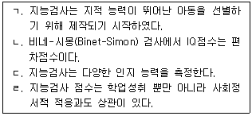
- ㄱ, ㄴ
- ㄴ, ㄷ
- ㄷ, ㄹ
- ㄴ, ㄷ, ㄹ
- ㄱ, ㄴ, ㄷ, ㄹ
(정답률: 46%)
10. 청소년 자살에 관한 설명으로 옳은 것은?
- 청소년의 자살시도는 죽으려는 의도보다는 어려움을 호소하려는 의도인 경우가 더 많다.
- 자살에 사용된 방법은 남녀 간에 큰 차이가 없다.
- 자살시도 비율과 실제자살 비율 모두 소년이 소녀보다 더 높다.
- 청소년의 자살 비율은 국가 간 차이가 거의 없다.
- 자살하는 청소년은 대부분 품행장애 청소년이다.
(정답률: 75%)
11. 신경계 발달에 관한 설명으로 옳은 것은?
- 태아기 신경세포 증가는 정보 저장의 결과이다.
- 시냅스의 선택적 소멸은 신경퇴화 현상이다.
- 수초화는 정보 전달의 효율성을 낮춘다.
- 대뇌 편재화에 따라 뇌 가소성이 증가된다.
- 영유아기 뇌 발달의 특징은 뉴런과 시냅스의 과잉생산 후 가지치기이다.
(정답률: 65%)
12. 프로이드(Freud)의 심리성적 발달 단계와 에릭슨(Erikson)의 심리사회적 위기의 연결이 옳지 않은 것은?
- 구강기 - 신뢰감 대 불신
- 항문기 - 자율성 대 수치심과 회의
- 남근기 - 주도성 대 죄책감
- 잠복기 - 생산성 대 침체성
- 생식기 - 정체감 성취 대 정체감 혼미
(정답률: 75%)
13. 아버지 애착에 관한 설명으로 옳은 것을 모두 고른 것은?
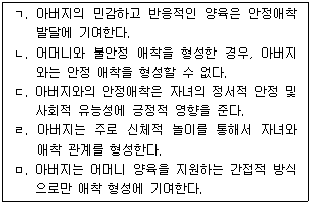
- ㄱ, ㄴ
- ㄱ, ㄷ
- ㄱ, ㄷ, ㄹ
- ㄱ, ㄷ, ㄹ, ㅁ
- ㄴ, ㄷ, ㄹ, ㅁ
(정답률: 73%)
14. 청소년기 남자보다 여자에게서 더 높은 수준으로 나타나는 공격 유형은?
- 신체적 공격
- 적대적 공격
- 외현적 공격
- 도구적 공격
- 관계적 공격
(정답률: 73%)
15. 다음이 설명하고 있는 태아기 기형발생물질(teratogen)의 작용 원리는?
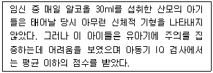
- 민감기(critical period)의 원리
- 사용량의 법칙
- 일대일 대응의 법칙
- 조절가능성의 법칙
- 수면효과(sleeper effect)
(정답률: 63%)
16. 다음은 마샤(Marcia)의 자아정체감 지위 중 어디에 해당하는가?
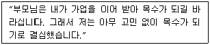
- 정체성 혼미(diffusion)
- 정체성 유예(moratorium)
- 정체성 유실(foreclosure)
- 정체성 성취(achievement)
- 정체성 위기(crisis)
(정답률: 75%)
17. 다음과 같은 신체적ㆍ심리적 문제를 나타내는 성염색체 이상은?
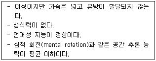
- 슈퍼매일(Supermale) 증후군
- 취약 X(Fragile X) 증후군
- 클라인펠터(Klinefelter) 증후군
- 터너(Turner) 증후군
- 다운(Down) 증후군
(정답률: 66%)
18. 죄책감과 수치심에 관한 설명으로 옳지 않은 것은?
- 죄책감은 외적 귀인, 수치심은 내적 귀인과 관련된다.
- 죄책감은 자신의 잘못을 보상하도록 동기화 한다.
- 수치심은 타인으로부터 숨거나 피하도록 동기화 한다.
- 죄책감과 수치심은 모두 자의식적 복합정서이다.
- 죄책감은 자기 행동(doing)에, 수치심은 자기 존재(being)에 초점을 맞춘다.
(정답률: 57%)
19. 다음에 해당하는 놀이 유형은?
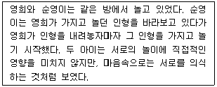
- 비사회적 놀이
- 평행 놀이
- 상상 놀이
- 교환 놀이
- 연합 놀이
(정답률: 61%)
20. 시험에서 낮은 점수를 받은 후 다음과 같이 말한 학생의 귀인 양식과 실패 후 반응이 바르게 묶인 것은?
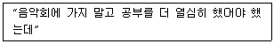
- 내적ㆍ안정적 귀인, 숙달지향적 반응
- 내적ㆍ불안정적 귀인, 숙달지향적 반응
- 내적ㆍ안정적 귀인, 무기력 반응
- 외적ㆍ안정적 귀인, 무기력 반응
- 외적ㆍ불안정적 귀인, 숙달지향적 반응
(정답률: 56%)
21. 발달의 개념 및 연구에 관한 설명으로 옳은 것은?
- 발달이란 출생에서부터 성인기까지의 전생애를 통해 이루어지는 모든 변화의 양상과 과정을 의미한다.
- 연령에 따른 발달적 특징을 분석하는 것을 발달기제 연구라고 한다.
- 변화의 양상과 과정을 조작적으로 기술하면, 어떤 특징의 양적 증대와 구조의 정밀화, 기능의 유능화를 의미하며, 이들 특징의 부정적 변화도 함께 포함한다.
- 발달적 변화가 일어나는 원인과 방법을 탐색하는 것을 현상기술적 연구라고 한다.
- 변화의 과정을 설명하기 위해서는 집단의 규준을 탐색하는 것이 중요하다.
(정답률: 47%)
22. 애착에 관한 설명으로 옳지 않은 것은?
- 영아기에 형성된 애착유형은 성장 후에도 지속되는 경향이 있다.
- 불안정 애착은 정서발달에 부정적인 영향을 준다.
- 안정애착을 형성한 아동은 또래관계, 주도성, 사회적 기술이 우수하다.
- 다인수(multiple) 애착은 사회성과 정서발달에 부정적 영향을 주며, 불안정 애착으로 발전한다.
- 애착은 지적 호기심과 학업성취도 등의 인지발달에 영향을 준다.
(정답률: 77%)
23. 다음의 현상을 나타내는 개념은?
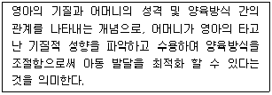
- 안정애착 형성
- 조화의 적합성
- 허용적 양육태도
- 민주적 양육태도
- 상호작용적 의사소통
(정답률: 43%)
24. 에릭슨(Erikson)의 심리사회적 발달이론에 기초할 때, 청소년기에 정체감 형성이 중요한 이유로 옳지 않은 것은?
- 내적인 충동의 질적ㆍ양적 변화가 일어나기 때문이다.
- 추상적 사고를 하게 되면서 자신의 미래와 존재에 대해 고민하는 기회가 많아지기 때문이다.
- 아동도 성인도 아닌 주변인으로서의 특성 때문이다.
- 진로나 중요 과업에 대해 자기 선택을 강요받기 때문이다.
- 이성과의 진실한 관계를 희망하고, 성역할의 고착화가 일어나기 때문이다.
(정답률: 60%)
25. 노화의 원인에 관한 이론 중 유전적 계획이론을 설명한 것으로 옳은 것은?
- 인체를 장기간 사용함으로써 기능이 약화되고 구조가 와해되어서 노화가 발생한다고 주장한다.
- 내분비체계와 면역체계의 변화 및 기능상실로부터 노화가 시작된다고 주장한다.
- 활성화 산소의 독성 때문에 암이나 관절염 등의 질병이 발생하고 이것의 축적으로 노화가 발생한다고 주장한다.
- 신체의 과도한 사용, 질병, 장애와 같은 요인이 노화를 가속화시킨다고 주장한다.
- DNA의 손상이 노화를 일으킨다고 주장한다.
(정답률: 61%)
26. 발달연구에서 연령효과와 동시대 출생집단 효과, 측정시기 효과를 분리해서 볼 수 있는 연구접근법은?
- 횡단적 접근법
- 종단적 접근법
- 계열적 접근법
- 자기보고 접근법
- 직접관찰 접근법
(정답률: 50%)
27. 동물행동학적 이론과 애착에 관한 설명으로 옳지 않은 것은?
- 종 특유의 행동은 유기체의 생존가능성을 높이며 진화의 산물이다.
- 어떤 동물이 생후 특정 시기에 어떤 대상을 뒤따르거나 그 대상의 특정 행동을 습득하게 되는 것을 각인이라고 한다.
- 동물행동학은 모든 문화권의 인간이 공통적으로 갖는 발달의 생물학적 뿌리를 탐색하는데 도움이 된다.
- 아기의 미소짓기와 옹알이, 귀여움은 아기를 보살피는 어머니의 모성행동을 유발하는 중요한 유발자극이다.
- 볼비(Bowlby)는 애착을 측정하기 위해 '낯선 상황 실험장치'를 고안하였다.
(정답률: 67%)
28. 친사회적 행동에 관한 설명으로 옳지 않은 것은?
- 이타성이 행동으로 나타난 것을 말한다.
- 다른 사람보다 자신의 욕구에 더 관심을 갖는다.
- 이타적 자기도식과 관련성이 높다.
- 사회적 조망수용능력과 높은 관련성이 있다.
- 아동기에 연령과 함께 증가하며 인지능력의 발달을 반영한다.
(정답률: 74%)
29. 사춘기의 신체ㆍ생리적 발달에 관한 설명으로 옳지 않은 것은?
- 성장폭발, 성장가속화, 성장불균형, 성장의 개인차 등의 특징이 있다.
- 2차 성징의 출현은 안드로겐과 에스트로겐 호르몬 작용 때문이다.
- 사춘기를 아동기와 구분지을 수 있는 중심적인 특징은 생식능력이다.
- 운동능력 및 근육의 발달은 사회적 부적응과 일탈행동의 주요 원인이 된다.
- 사춘기의 성적 성숙에 영향을 주는 요인은 유전, 건강, 영양 등이다.
(정답률: 70%)
30. 영아기 신체발달에 관한 설명으로 옳은 것을 모두 고른 것은?
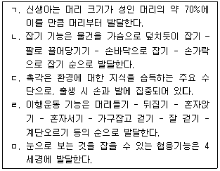
- ㄱ, ㄴ, ㄷ
- ㄱ, ㄷ, ㅁ
- ㄱ, ㄴ, ㄹ
- ㄴ, ㄷ, ㄹ
- ㄴ, ㄹ, ㅁ
(정답률: 75%)
2과목: 집단상담의 기초
31. 집단상담 시 집단상담자의 행동으로 가장 적절한 것은?
- 집단중기에 집단원들의 진술에 일일이 반응한다.
- 전문가의 이미지를 유지하기 위해 자기노출을 하지 않는다.
- 질문을 자주하는 집단원의 행동을 적극적인 집단참여로 보고 수용한다.
- 소극적으로 집단에 참여할 경우 적극적으로 참여할 것을 지속적으로 권유한다.
- 집단원들 간의 상호작용을 촉진하기 위해 다른 집단원들이 반응을 보일 때까지 잠시 기다려준다.
(정답률: 60%)
32. 생산적인 집단 형성을 방해하는 집단원의 문제행동으로 볼 수 없는 것은?
- “바다님은 혀를 제멋대로 놀리는 게 문제야.”
- “나무님 이야기에 내가 막 눈물이 나고 슬퍼요.”
- “나는 정말 아무 문제없어요. 다 괜찮은 것 같아요.”
- (어깨를 다독이며) “그만 울어. 괜찮아, 너만 그런 일을 겪은 게 아니야.”
- “네가 다가가지 않으니까 그렇지. 네가 먼저 다가가서 인사해보렴.”
(정답률: 75%)
33. 현실치료 집단상담에서 집단원의 바람이나 욕구 충족에 효과적인 계획의 특징으로 옳은 것을 모두 고른 것은?
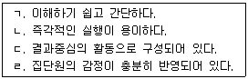
- ㄱ, ㄴ
- ㄷ, ㄹ
- ㄱ, ㄴ, ㄹ
- ㄱ, ㄷ, ㄹ
- ㄱ, ㄴ, ㄷ, ㄹ
(정답률: 18%)
34. 집단상담의 장점에 관한 설명으로 옳은 것은?
- 누구나 원하면 쉽게 참여할 수 있다.
- 소속감이 생기고 동료의식이 발달한다.
- 집단의 압력으로 자기개방을 할 수 있다.
- 전문적인 상담기술을 필요로 하지 않는다.
- 개인상담에 비해 개인의 문제를 깊게 다룰 수 있다.
(정답률: 79%)
35. 정신분석 집단상담에서 저항으로 볼 수 있는 행동을 모두 고른 것은?
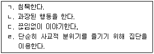
- ㄱ, ㄴ, ㄷ
- ㄱ, ㄴ, ㄹ
- ㄱ, ㄷ, ㄹ
- ㄴ, ㄷ, ㄹ
- ㄱ, ㄴ, ㄷ, ㄹ
(정답률: 61%)
36. BASIC-ID 모델을 적용하여 집단원의 문제를 조망한 것으로 옳은 것을 모두 고른 것은?
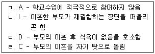
- ㄱ, ㄴ
- ㄴ, ㄹ
- ㄱ, ㄴ, ㄹ
- ㄴ, ㄷ, ㄹ
- ㄱ, ㄴ, ㄷ, ㄹ
(정답률: 49%)
37. 집단상담계획서에 반드시 포함되어야 할 내용이 아닌 것은?
- 집단 목적
- 집단 유형
- 집단 규칙
- 집단 활동내용
- 기대효과 및 평가계획
(정답률: 70%)
38. 집단의 구조 또는 형태에 관한 설명으로 옳지 않은 것은?
- 구조화집단은 과정중심 집단이다.
- 폐쇄집단은 집단의 안정성이 높아 집단응집력이 강한 편이다.
- 구조화집단은 집단의 목표, 과정, 내용, 절차 등을 체계적으로 구성해 둔다.
- 마라톤집단은 심화된 상호작용의 활성화를 꾀하기 위한 집단이다.
- 자조집단은 지도자의 전문적 도움 없이 집단원들 간에 서로를 돕는 특성이 강한 집단이다.
(정답률: 40%)
39. 집단상담자의 윤리적 행동에 해당되는 것은?
- 중도이탈하려는 학생에게 징계로 인한 집단참여이므로 이탈할 수 없다고 말해준다.
- 절친한 친구의 자녀를 자신의 집단상담 프로그램에 참여시켰다.
- 학교폭력으로 힘들어서 자살할 구체적인 계획을 세웠다는 이야기를 듣고 이 사실을 학부모와 담임교사에게 알린다.
- 바쁜 일정 때문에 집단의 목적과 절차에 대한 설명을 집단 2회기에 하였다.
- 집단사례를 발표하기 위해 학생의 동의서를 받으려고 했으나 연락이 닿지 않아 익명으로 발표하였다.
(정답률: 75%)
40. 집단상담 기술과 그 예시가 바르게 연결된 것은?
- 개방적 질문 - “지금 기분이 슬픈가요?”
- 연결짓기 - “슬픈 이야기를 웃으면서 하네요.”
- 명료화 - “잠깐, 다른 분들의 이야기도 들어야하니 가능한 1분 안에 마무리해 주세요.”
- 해석 - “다른 친구들이 고통스러웠던 이야기를 할 때 계속 달래려고 하는 것은 자신이 겪었던 고통스런 기억이 되살아나는 것에 대한 두려움 때문이 아닌가요?”
- 직면 - “아까 민준이도 송이처럼 친구사귀기가 힘들다고 이야기한 것 같은데 민준이 이야기를 들어볼까요?”
(정답률: 77%)
41. 교류분석 집단상담의 주요개념에 관한 설명으로 옳지 않은 것은?
- 구조분석은 비효율적인 사고, 행동, 감정을 변화시키는 방법이다.
- 게임은 대인관계 상호작용에서의 교차적 교류양식이다.
- 각본분석은 내담자의 생활양식을 재결단할 수 있는 토대를 제공한다.
- 교류분석은 부적절한 교차적 교류나 이면적 교류를 중단하도록 촉진시키는 데 활용된다.
- 라켓감정은 생의 초기에 중요한 인물과의 상호작용을 통해 형성된 만성적 부정 감정양식을 의미한다.
(정답률: 46%)
42. 게슈탈트 집단상담의 목표에 관한 설명으로 옳지 않은 것은?
- 통찰을 행동으로 옮긴다.
- 자기 내부의 양극단을 통합시킨다.
- 자신과 타인 간의 접촉을 경험하게 한다.
- 집단원 자신의 한계를 분명하게 정의한다.
- 지금-여기에 입각하여 과거는 다루지 않고 현재를 다룬다.
(정답률: 57%)
43. 집단상담 장면에서 발생할 수 있는 집단역동에 집단상담자가 적절하게 대처한 것은?
- 다루기 어색하고 힘든 주제는 비밀유지의 문제가 될 수 있으므로 다루지 않는다.
- 집단상담자는 집단분위기에 너무 민감해 하지 말고 집단에서 이루어야 할 집단목표 달성에 집중한다.
- 어떤 집단원이 제안한 의견이 계속해서 묵살 당하게 되면 집단상담자는 이 사실을 감지하고 당사자와 집단을 도와준다.
- 집단원들 간의 지도성 경쟁현상이 나타나면 집단상담자는 자신의 지도성을 확고히 지키려 노력한다.
- 하위집단은 집단 활동에 암암리에 영향력을 행사하고 이들에 의해 생기는 집단감정은 항상 부정적이기 때문에 하위집단이 생기는 것을 사전에 막는다.
(정답률: 75%)
44. 개인심리학적 집단상담 기법에 관한 설명과 그 기법을 바르게 연결한 것은?
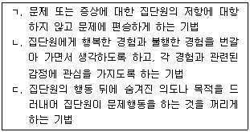
- ㄱ : 격려기법, ㄴ : 단추누르기, ㄷ : 스프에 침뱉기
- ㄱ : 역설기법, ㄴ : 마치~인 것처럼 행동하기, ㄷ : 악동 피하기
- ㄱ : 역설기법, ㄴ : 단추누르기, ㄷ : 스프에 침뱉기
- ㄱ : 격려기법, ㄴ : 마치~인 것처럼 행동하기, ㄷ : 충격기법
- ㄱ : 증상처방, ㄴ : 단추누르기, ㄷ : 악동 피하기
(정답률: 66%)
45. 인간중심 집단상담자의 개입방식으로 옳지 않은 것을 모두 고른 것은?
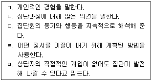
- ㄱ, ㄷ
- ㄱ, ㄹ
- ㄴ, ㄷ, ㄹ
- ㄴ, ㄷ, ㅁ
- ㄷ, ㄹ, ㅁ
(정답률: 75%)
46. 심리극의 구성요소가 아닌 것은?
- 관객
- 무대
- 연출자
- 이중자아
- 주인공
(정답률: 70%)
47. 집단상담에서 표출된 갈등을 중재하는 기술에 해당하지 않는 것은?
- 부적절한 공격행동은 차단한다.
- 갈등관계의 집단원들은 직접 대면하지 않게 한다.
- 집단원들의 의사소통 내용을 명료화, 재진술 해준다.
- 갈등과 관련된 느낌과 생각을 직접 표현하도록 한다.
- 집단응집력을 기반으로 갈등을 직접 다루어야 한다.
(정답률: 69%)
48. 집단발달단계의 특징을 발달단계 순서대로 바르게 나열한 것은?
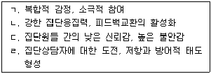
- ㄱ - ㄴ - ㄷ - ㄹ
- ㄱ - ㄷ - ㄹ - ㄴ
- ㄷ - ㄹ - ㄱ - ㄴ
- ㄷ - ㄹ - ㄴ - ㄱ
- ㄹ - ㄱ - ㄴ - ㄷ
(정답률: 62%)
49. 다음 특성이 나타나는 집단 발달단계에서 집단상담자가 담당해야 할 역할로 옳은 것은?
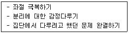
- 집단원들이 상호 간에 의존할 수 있으면서도 독립적일 수 있도록 돕는다.
- 집단원의 저항과 불안을 존중하고 자신의 특성과 방어기제를 인식할 수 있게 돕는다.
- 집단응집력을 높이는 행동을 장려하고 상담자가 적절한 행동 모델을 보여준다.
- 집단원들의 변화를 강화하고, 특별한 기술들을 다양한 일상에서 적용시키도록 돕는다.
- 집단원이 자신의 두려움과 기대를 표현하도록 돕고 집단원의 질문을 개방적인 태도로 다룬다.
(정답률: 58%)
50. 집단응집력이 높다는 것을 알 수 있는 지표를 모두 고른 것은?
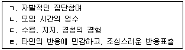
- ㄱ, ㄷ
- ㄴ, ㄹ
- ㄱ, ㄴ, ㄷ
- ㄴ, ㄷ, ㄹ
- ㄱ, ㄴ, ㄷ, ㄹ
(정답률: 52%)
51. 다음 대화에서 집단상담자가 사용한 상담기술은?
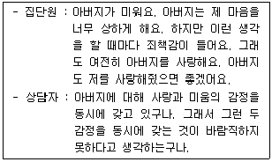
- 연결하기
- 해석하기
- 직면하기
- 명료화하기
- 자기노출하기
(정답률: 47%)
52. 학교장면에서 집단상담을 계획하고 준비할 때, 교내외 구성원의 적극적인 지지를 확보할 수 있는 방법으로 옳지 않은 것은?
- 학부모들에게는 홍보할 필요가 없으며 교내 구성원들에게 집중 홍보한다.
- 집단상담이 학교의 교육목표에 부합한다는 점을 교직원들에게 강조한다.
- 학업ㆍ정서행동ㆍ등교거부 문제 등 학교의 주된 관심사를 주제로 선정한다.
- 신학기 초뿐만 아니라 지속적으로 집단상담 계획을 교직원들에게 홍보한다.
- 집단상담이 학생들뿐만 아니라 교사들에게도 도움이 된다는 점을 학교행정가들에게 인식시킨다.
(정답률: 75%)
53. 청소년 집단원의 문제행동과 그에 대한 집단상담자의 대처방법의 연결이 옳지 않은 것은?
- 습관적 불평 - 불평 이유를 파악하되 논쟁이 유발되지 않도록 유의한다.
- 소극적 참여 - 지루함으로 인해 침묵할 경우에는 숙고한 후 이야기할 수 있도록 기다려준다.
- 하위집단 형성 - 하위집단 형성에 따른 문제점을 전체 집단 내에서 개방적으로 다룬다.
- 대화 독점 - 독점 행동을 통해 얻고자 하는 것이 무엇인지를 탐색할 수 있게 한다.
- 지성화 - 집단원에게 자신이 말하는 내용과 관련된 감정을 인식하고 표현할 수 있게 한다.
(정답률: 56%)
54. 개인상담에 비해 집단상담 장면에서 활용도가 더 높은 상담기술을 모두 고른 것은?
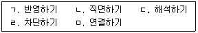
- ㄱ, ㄴ
- ㄴ, ㄷ
- ㄹ, ㅁ
- ㄱ, ㄹ, ㅁ
- ㄴ, ㄷ, ㅁ
(정답률: 72%)
55. 공동상담자 활용의 장점으로 옳은 것을 모두 고른 것은?
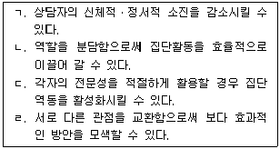
- ㄱ, ㄴ
- ㄱ, ㄷ
- ㄱ, ㄴ, ㄹ
- ㄴ, ㄷ, ㄹ
- ㄱ, ㄴ, ㄷ, ㄹ
(정답률: 72%)
56. 개방집단에 관한 설명으로 옳은 것은?
- 집단 응집력이 쉽게 높아진다.
- 학교 집단상담의 형태로 적합하다.
- 새로운 집단원의 참여와 탈퇴가 어렵다.
- 집단원들 간의 친밀감을 빨리 증진시킬 수 있다.
- 새로운 집단원 참여에 따른 집단구조의 불안정성을 치료적으로 활용하는 전략이 필요하다.
(정답률: 65%)
57. 청소년 집단상담자가 갖추어야 할 전문적 자질에 해당하지 않는 것은?
- 치료적ㆍ예방적ㆍ발달적 집단을 동일한 관점에서 이끌어간다.
- 청소년의 부모와 협력할 수 있는 기술을 갖는다.
- 각 연령집단의 발달과업을 이해한다.
- 청소년 집단원에게 적합한 의사소통 기술을 갖춘다.
- 자신의 가치관이 다문화 청소년에게 미칠 수 있는 영향을 인식한다.
(정답률: 57%)
58. 청소년의 경우 개인상담에 비해 집단상담이 지니는 장점을 모두 고른 것은?
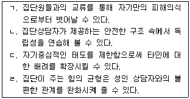
- ㄱ, ㄷ
- ㄴ, ㄹ
- ㄱ, ㄴ, ㄹ
- ㄴ, ㄷ, ㄹ
- ㄱ, ㄴ, ㄷ, ㄹ
(정답률: 68%)
59. 다음은 집단상담자의 피드백 내용이다. 효과적인 피드백에 적용된 원리는?
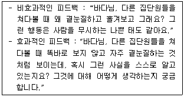
- 지각된 사실적인 진술을 제공하되 도덕적인 가치판단을 배제한다.
- 집단원과의 관계에서 변화되기 원하는 바를 표현한다.
- 집단원의 행동에 대한 집단상담자 자신의 느낌을 표현한다.
- 다른 집단원들이 유사하게 지각하고 있는 피드백을 제공한다.
- 가능한 한 행동변화 대안까지 제시한다.
(정답률: 63%)
60. 미성년자를 대상으로 집단상담을 계획하고 실시할 때 고려해야 할 점으로 옳은 것은?
- 집단의 목적을 집단상담자 수준의 언어로 설명한다.
- 집단원의 연령이 어릴수록 집단규모를 크게 한다.
- 응집력을 높이기 위해 집단 초기단계에서 깊은 자기개방을 유도한다.
- 집단원이 불편함을 느끼더라도 집단 활동에 적극 참여하도록 종용한다.
- 미성년자의 집단상담 참여에 대해 부모나 보호자의 동의를 얻는 것이 바람직하다.
(정답률: 69%)
3과목: 심리측정 및 평가
61. 심리평가(psychological assessment)의 정의로 옳은 것은?
- 심리적 특성에 대한 체계적인 면담이다.
- 심리검사, 면담, 행동관찰, 개인력 등 개인에 관한 정보를 종합적으로 통합하는 과정이다.
- 얻어진 검사점수의 질을 객관적인 기준에 따라서 분류하는 과정이다.
- 심리적 특성을 나타내는 행동표본을 표준화된 방식으로 측정하는 기법이다.
- 명확한 공식이나 규칙에 따라서 사람의 특성을 수량화하는 것이다.
(정답률: 50%)
62. 객관적 심리검사와 비교할 때 투사검사에 관한 설명으로 옳지 않은 것은?
- 검사의 신뢰도와 타당도에 논란이 많다.
- 검사의 채점 및 해석 과정을 표준화하기 어렵다.
- 검사 해석 시 검사자의 주관이 개입될 여지가 크다.
- 성격의 무의식적 측면에 관한 정보를 제공한다.
- 자극이 모호하여 수검자가 반응을 조작하기 쉽다.
(정답률: 60%)
63. 심리검사에 관한 설명으로 옳지 않은 것은?
- 검사명칭이 같아도 측정내용이 다를 수 있다.
- 심리생리적 측정방식은 자기보고 편파가 작다.
- 심리적 구인은 직접적으로 측정 가능하다.
- 규준의 표본크기가 큰 경우에도 신뢰도와 타당도 검증이 필요하다.
- 사용자의 자격은 검사 종류에 따라 제한되어야 한다.
(정답률: 62%)
64. 집중경향치(central tendency)에 관한 설명으로 옳은 것은?
- 최빈값은 2개 이상이 될 수 없다.
- 평균값은 극단 값의 영향을 받지 않는다.
- 사례의 수가 짝수인 경우 중앙값을 계산할 수 없다.
- 평균값에 대한 모든 점수들의 편차 합은 항상 0이다.
- 대칭적이고 양봉분포인 경우 평균값, 중앙값, 최빈값은 동일하다.
(정답률: 43%)
65. 표준점수(Z)에 관한 설명으로 옳지 않은 것은?
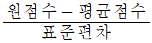
의 수식으로 표현할 수 있다.- 평균에서 이탈된 거리와 방향을 동시에 나타낼 수 있다.
- 표준점수를 이용하여 서로 다른 검사의 결과들을 비교할 수 있다.
- 원점수의 분포가 부적으로 편포되어 있으면 표준점수도 부적으로 편포된다.
- 한 점수 분포에서 원점수를 표준점수로 변환하면 평균은 50, 표준편차는 10이 된다.
(정답률: 50%)
66. 규준참조 검사에 관한 설명으로 옳은 것은?
- 결과참조 검사라고도 한다.
- 이상적인 점수분포는 부적으로 편포된 분포이다.
- 검사점수의 표준편차는 의미있는 정보를 제공한다.
- 검사해석의 참조 틀은 특정한 전집이 아니라 특정한 내용영역이다.
- 주요 관심은 점수의 상대적 서열이나 위치가 아니라 특정 행동의 달성 여부이다.
(정답률: 59%)
67. 심리검사의 규준에 관한 설명으로 옳은 것을 모두 고른 것은?
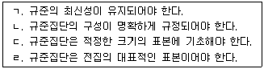
- ㄴ, ㄹ
- ㄱ, ㄴ, ㄷ
- ㄱ, ㄷ, ㄹ
- ㄴ, ㄷ, ㄹ
- ㄱ, ㄴ, ㄷ, ㄹ
(정답률: 62%)
68. 신뢰도계수에 영향을 주는 요인이 아닌 것은?
- 집단의 동질성
- 검사의 활용성
- 검사문항의 수
- 문항의 난이도
- 신뢰도 추정방법
(정답률: 52%)
69. 심리검사의 타당도에 관한 설명으로 옳지 않은 것은?
- 내용타당도는 측정변인이 구체적일수록 검증이 어렵다.
- 안면타당도가 높아도 내용타당도는 낮을 수 있다.
- 예언타당도는 미래의 행동특성을 준거로 검증할 수 있다.
- 공인타당도는 검사와 외적준거 간의 상관계수로 표현할 수 있다.
- 구인타당도는 요인분석이나 다특성-다방법 행렬분석으로 검증할 수 있다.
(정답률: 52%)
70. 심리검사의 타당도가 양호하게 산출되는 조건이 아닌 것은?
- 검사의 신뢰도가 낮기보다는 높은 경우
- 심리검사의 문항 수가 적기보다는 많은 경우
- 소규모보다는 대규모 표본에서 검증하는 경우
- 심리검사 결과가 기본구성비율(base rate)보다 민감도가 낮은 경우
- 심리검사의 결과가 실제 선발 여부와 유의한 관계가 있을 때, 선발확률을 높이기보다는 낮추는 경우
(정답률: 42%)
71. 심리검사의 시행과 관련된 설명으로 적절한 것은?
- 표준절차 외에 자신만의 효과적인 절차를 사용한다.
- 중립적 검사시행을 위해 래포 형성은 배제되어야 한다.
- 표준절차 외의 부가적 절차로써 산출된 결과는 규준에 의하여 해석하지 않는다.
- 검사 시행 시 수검자의 심신 상태를 고려하지 않는다.
- 검사를 자동화된 컴퓨터 검사로 전환한 경우, 원 검사에 대한 전문적 훈련은 요구되지 않는다.
(정답률: 72%)
72. 검사결과에 영향을 미치는 수검자 변인으로 옳지 않은 것은?
- 수검능력
- 검사경험
- 반응태세
- 반응양식
- 검사과제
(정답률: 39%)
73. 등간척도에 관한 설명으로 옳은 것은?
- 절대영점이 없다.
- 범주척도라고도 한다.
- 변량분석을 수행할 수 없다.
- 우편번호는 등간척도에 해당한다.
- 상대적 크기에 관한 정보를 주지 못한다.
(정답률: 61%)
74. 지능이론가와 그의 주장으로 옳지 않은 것은?
- 스피어만(Spearman) - 2요인 모형
- 써스톤(Thurstone) - 다요인/기본정신능력 모형
- 길포드(Guilford) - 지능구조 모형
- 버트(Burt) - 결정성 및 유동성 지능 모형
- 가드너(Gardner) - 다중지능 모형
(정답률: 61%)
75. K-WAIS-Ⅳ와 K-WISC-Ⅳ에 관한 설명으로 옳은 것은?
- 준거참조 검사의 대표적인 양식이다.
- 아동용은 중지규칙에서 요구하는 연속 오답 문항 수가 더 적다.
- 지능지수는 정신연령과 생활연령 간의 비율로 표현된다.
- 소검사의 표준점수는 평균 10, 표준편차 3이다.
- 연령수준마다 과제가 다르며, 연령척도 형식으로 채점된다.
(정답률: 46%)
76. 개인용 지능검사와 비교할 때 집단용 지능검사에 관한 설명으로 옳지 않은 것은?
- 검사의 시행조건이 균일화 된다.
- 검사자 변량이 커질 수 있다.
- 수검자의 반응범위가 제한된다.
- 정서상태가 불안정한 수검자에게 권장되지 않는다.
- 수행을 방해하는 개인적 요인의 탐지가 어렵다.
(정답률: 55%)
77. 심리검사 장면에서 로젠탈(Rosenthal) 효과에 관한 설명으로 옳은 것은?
- 검사자의 기대가 검사결과에 영향을 미친다.
- 검사자의 판단이 양극단보다는 가운데로 몰린다.
- 검사자의 판단이 관대한 경향을 보인다.
- 검사결과는 검사내용이 같아도 검사형식에 따라 달라진다.
- 수검자의 선행경험이 결과에 영향을 미친다.
(정답률: 64%)
78. 행동관찰법에 관한 설명으로 옳은 것을 모두 고른 것은?
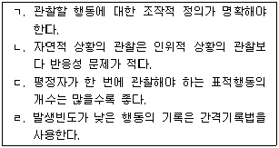
- ㄱ, ㄴ
- ㄱ, ㄷ
- ㄴ, ㄷ
- ㄴ, ㄹ
- ㄷ, ㄹ
(정답률: 58%)
79. 고등학생용 심리검사의 규준을 만들기 위해 1,000명을 표집할 때, 전국을 15개 지역으로 나누어 지역별 고등학생 비율에 따라 무선표집하였다. 이 표집 방법은?
- 군집표집
- 유층표집
- 의도적 표집
- 단순무선표집
- 체계적 표집
(정답률: 47%)
80. 한 검사 내에 있는 문항 간 일관성(consistency)에 근거해서 신뢰도를 추정하는 방법은?
- 사분 계수
- 평정자간 상관
- 동형검사 상관
- Cronbach α 계수
- 검사-재검사 상관
(정답률: 65%)
81. 문항변별도에 관한 설명으로 옳지 않은 것은?
- 문항난이도의 영향을 받는다.
- 문항의 변별력이 높으면 검사의 신뢰도는 높아진다.
- 한 문항에 바르게 답한 사례수를 총 사례수의 비율로 표시한 것이다.
- 개별 문항 점수와 전체점수 간의 상관이 높으면 문항의 변별도가 높아진다.
- 개별 문항이 총점이 높은 사람과 낮은 사람을 구분해 주는 정도를 의미한다.
(정답률: 25%)
82. 직무와 관련된 특수적성검사에 관한 설명으로 옳은 것을 모두 고른 것은?
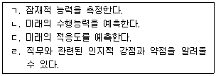
- ㄱ, ㄴ, ㄷ
- ㄱ, ㄴ, ㄹ
- ㄱ, ㄷ, ㄹ
- ㄴ, ㄷ, ㄹ
- ㄱ, ㄴ, ㄷ, ㄹ
(정답률: 55%)
83. 성격 5요인 중 개방성 요인에서 높은 점수를 얻었을 때 가장 기대되는 특성은?
- 꼼꼼하다.
- 활동적이다.
- 호기심이 많다.
- 참을성이 있다.
- 즐거움을 추구한다.
(정답률: 70%)
84. MBTI에 관한 설명으로 옳은 것은?
- 밀(Meehl)의 이론을 기초로 제작되었다.
- 15개의 성격유형으로 이루어져 있다.
- 성격유형마다 3개의 기능(주기능, 부기능, 열등기능)으로 구성되어 있다.
- 성격의 병리적인 특성을 알 수 있다.
- 성격의 선천적 선호성을 알려주는 검사이다.
(정답률: 68%)
85. 성격평가질문지(PAI)의 치료고려 척도에 해당하지 않는 것은?
- 공격성(AGG)
- 자살관념(SUI)
- 스트레스(STR)
- 약물사용(DRG)
- 치료거부(RXR)
(정답률: 54%)
86. 집-나무-사람(HTP) 검사의 시행에 관한 설명으로 옳은 것은?
- 집을 그릴 때 용지를 가로방향으로 놓아 준다.
- 집, 나무, 사람 외에 다른 그림을 그려서는 안 된다고 지시한다.
- 사람을 그릴 때는 수검자와 같은 성별의 인물을 먼저 그리게 한다.
- 검사 특성상 아동과 청소년에게만 시행한다.
- 각 그림 당 5분의 제한시간을 준다.
(정답률: 63%)
87. MMPI-2의 임상척도가 아닌 것은?
- Hs
- Hy
- Sc
- Es
- Mf
(정답률: 68%)
88. 다음의 성격특징에 해당하는 홀랜드(Holland)의 직업적 성격 유형은?
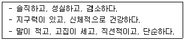
- 실재형(realistic type)
- 탐구형(investigative type)
- 예술형(artistic type)
- 관습형(conventional type)
- 기업형(enterprising type)
(정답률: 66%)
89. 로샤(Rorschach)검사에서 사용하는 채점지표가 아닌 것은?
- 특수점수
- 반응영역
- 반응개수
- 반응내용
- 조직화 활동
(정답률: 21%)
90. 다음 MMPI-2 결과에 대해 가능한 해석은?
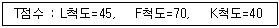
- 다소 유치한 방식으로 남에게 좋게 보이려고 애쓴다.
- 신체적, 정서적 곤란을 호소한다.
- 방어기제로 부인과 억압을 사용한다.
- 여러 가지 문제를 해결할 수 있는 적절한 능력이 있다.
- 검사결과를 무효로 만들려는 고의적인 태도를 보인다.
(정답률: 57%)
4과목: 상담이론
91. 심리상담에 관한 설명으로 옳은 것을 모두 고른 것은?
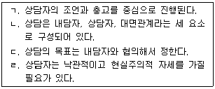
- ㄱ, ㄴ
- ㄴ, ㄷ
- ㄱ, ㄴ, ㄷ
- ㄱ, ㄴ, ㄹ
- ㄴ, ㄷ, ㄹ
(정답률: 61%)
92. 정신분석에 관한 설명으로 옳은 것을 모두 고른 것은?
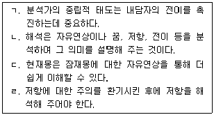
- ㄱ, ㄴ
- ㄱ, ㄹ
- ㄱ, ㄴ, ㄷ
- ㄱ, ㄴ, ㄹ
- ㄴ, ㄷ, ㄹ
(정답률: 49%)
93. 상담기술에 관한 설명으로 옳지 않은 것은?
- 요약은 산발적으로 드러나는 생각과 감정에서 초점을 찾을 기회를 제공한다.
- 반영은 내담자의 말을 참신한 다른 말로 되돌려 주는 시도이다.
- 해석은 상담의 어느 시기라도 할 수 있다.
- 내담자의 자세, 몸짓, 어조 등도 반영해 줄 필요가 있다.
- 직면은 내담자에게 상처를 줄 수 있다.
(정답률: 58%)
94. 상담자 자질에 관한 설명으로 옳지 않은 것은?
- 전문 지식을 바탕으로 적절한 질문을 할 수 있다.
- 경험과 통찰은 배제하고 지식과 이론을 중시한다.
- 인간관계에서 개방적이며 내담자에게 본보기가 될 수 있다.
- 유연성과 안정성을 보여 줄 수 있는 성격이다.
- 문화적 차이에 대한 민감성이 있다.
(정답률: 72%)
95. 인간중심상담의 관점에 해당되지 않는 것은?
- 내적 경험을 무시하고 부모의 기준에 맞추는 것이 부적응의 원인이라고 본다.
- 공감적 이해를 통해 오랫동안 감추고 있던 이야기를 내담자가 꺼낼 수 있도록 돕는 것을 중시한다.
- 내담자가 비행행동을 하고 있음에도 불구하고 내담자 안에는 성장 동기가 있음을 신뢰한다.
- 내담자의 고집스러운 성격은 어릴적 엄격한 배변훈련으로 인해 형성된 것으로 본다.
- 내담자에게 필요한 것은 무조건적이고 긍정적으로 수용해주는 것이라고 본다.
(정답률: 69%)
96. 상담기술과 반응 예시의 연결이 적절하지 않은 것은?
- 감정반영 - “엄마의 그 말에 많이 실망했나 보구나.”
- 재진술 - “네 말은 엄마가 동생을 더 예뻐하신다는 말이구나.”
- 명료화 - “너는 상황이 심각하다고 말하면서 웃는 표정을 짓고 있구나.”
- 자기개방 - “나도 네 나이 때는 사람들이 비웃을까봐 두려웠단다.”
- 간접질문 - “엄마의 말에 어떻게 대답했는지 궁금하구나.”
(정답률: 68%)
97. 인지치료의 주요 개념에 해당하는 것을 모두 고른 것은?
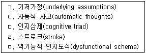
- ㄱ, ㄴ
- ㄴ, ㄷ
- ㄴ, ㄷ, ㅁ
- ㄱ, ㄴ, ㄷ, ㅁ
- ㄴ, ㄷ, ㄹ, ㅁ
(정답률: 36%)
98. 상담자 윤리기준에 관한 설명으로 옳지 않은 것은?
- 상담자의 책무에 대한 옳고 그름의 판단은 배제하고 있다.
- 내담자를 보호하고 상담자에게는 지침을 제공한다.
- 조항에 따라서 명확성이 결여되어 정도를 헤아리기 어려운 경우도 있다.
- 상담에서 요구되는 최소한의 기준을 지키도록 하기 위한 조항들로 구성되어 있다.
- 내담자의 상담 참여 및 지속 여부를 스스로 선택할 권리에 관한 조항이 포함되어 있다.
(정답률: 71%)
99. 게슈탈트치료에 관한 설명으로 옳은 것을 모두 고른 것은?
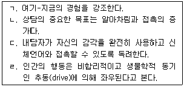
- ㄱ, ㄴ
- ㄷ, ㄹ
- ㄱ, ㄴ, ㄷ
- ㄴ, ㄷ, ㄹ
- ㄱ, ㄴ, ㄷ, ㄹ
(정답률: 70%)
100. 상담의 중기과정에 관한 설명으로 옳지 않은 것은?
- 내담자와의 관계형성에 집중한다.
- 문제해결을 위한 대안을 모색한다.
- 직면을 통해 내담자의 변화를 촉진한다.
- 상담과정에서 얻은 통찰을 실행에 옮기도록 돕는다.
- 호소문제와 관련된 감정, 사고, 행동 등을 인식하도록 돕는다.
(정답률: 60%)
101. 다음은 상담자가 실시한 검사해석의 일부이다. 이 상담자가 적용하고 있는 상담이론은?
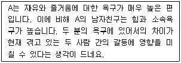
- 교류분석
- 정신분석
- 현실치료
- 개인심리학
- 게슈탈트치료
(정답률: 43%)
102. 상담자 윤리기준 중 비밀보장에 관한 설명으로 옳은 것을 모두 고른 것은?
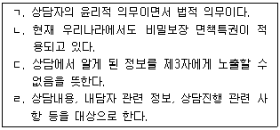
- ㄱ, ㄹ
- ㄴ, ㄷ
- ㄱ, ㄷ, ㄹ
- ㄴ, ㄷ, ㄹ
- ㄱ, ㄴ, ㄷ, ㄹ
(정답률: 52%)
103. 상담자의 비윤리적 행동에 해당되는 것을 모두 고른 것은?
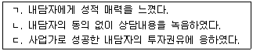
- ㄱ
- ㄴ
- ㄱ, ㄷ
- ㄴ, ㄷ
- ㄱ, ㄴ, ㄷ
(정답률: 35%)
104. 절충적 상담에 관한 설명으로 옳지 않은 것은?
- 실용주의(pragmatism)에 근거한다.
- 세 가지 이상의 상담이론을 통합적으로 사용해서는 안 된다.
- 다양한 이론적 접근들을 필요에 따라 선별적으로 적용한다.
- 모든 문제에 효과 있는 하나의 이론이나 기법은 없다고 가정한다.
- 동일한 내담자에 대해 서로 다른 이론의 기법 적용을 허용한다.
(정답률: 64%)
1⑤. 평소 숙제를 제출하지 않던 학생이 숙제를 해오자 청소를 면제해 주는 행동수정 원리는?
- 조성
- 정적강화
- 부적강화
- 상호억제
- 프리맥 원리
(정답률: 67%)
106. WDEP 모형에 따른 상담절차를 순서대로 올바르게 나열한 것은?
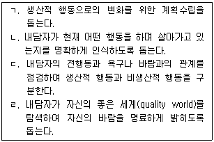
- ㄱ - ㄴ - ㄷ - ㄹ
- ㄱ - ㄹ - ㄴ - ㄷ
- ㄷ - ㄱ - ㄴ - ㄹ
- ㄹ - ㄱ - ㄷ - ㄴ
- ㄹ - ㄴ - ㄷ - ㄱ
(정답률: 64%)
107. 해석에 관한 설명으로 옳지 않은 것은?
- 정신분석 상담의 주요 기법이다.
- “당신은 지금 괜찮다고 말하고 있는데, 나에게는 초조하게 보이는군요.”라는 진술은 해석의 예이다.
- 효과적인 해석은 내담자를 통찰로 이끌어 행동변화를 유도할 수 있다.
- 상담자의 이론적 입장이나 관심사에 따라 다른 양상으로 제공할 수 있다.
- 내담자가 자신의 문제를 새로운 각도에서 이해하도록 생활경험과 행동의 의미를 설명해 주는 상담기술이다.
(정답률: 59%)
108. 내담자의 저항에 대한 상담자의 태도로 적절한 것은?
- 저항을 상담과정의 자연스러운 현상으로 받아들인다.
- 저항이 가라앉을 때까지 개입하지 않고 기다린다.
- 상담 종결을 우선적으로 고려한다.
- 내담자가 괴롭혀도 비위를 맞추며 견딘다.
- 상담 결과에 대한 기대를 낮춘다.
(정답률: 64%)
109. 합리정서행동치료에서 강조하는 비합리적 신념이 아닌 것은?
- 모든 사람으로부터 사랑과 인정을 받아야 한다.
- 과거 경험이 현재 행동에 영향을 주지만, 노력하면 과거의 영향에서 벗어날 수 있다.
- 가치 있는 사람이 되려면 완벽하게 일을 잘해야 한다.
- 사악한 사람은 반드시 처벌을 받아야 한다.
- 모든 문제에는 반드시 해결책이 있으며, 이를 찾지 못하는 것은 끔찍한 일이다.
(정답률: 72%)
110. 실존치료에 관한 설명으로 옳지 않은 것은?
- “본질은 실존에 앞선다”라는 명제를 앞세운다.
- 의미치료는 실존치료에 속한다.
- 현상학의 영향을 받았다.
- 내담자의 주관적인 세계를 중시하고 성장을 돕는다.
- 역설적 의도는 실존치료에서 사용하는 기법이다.
(정답률: 43%)
111. 교류분석에 관한 설명으로 옳지 않은 것은?
- 사람은 욕구 충족을 위해서 환경을 통제할 수 있다는 통제이론에 근거하고 있다.
- 번(Berne)이 창시한 이론이다.
- 심리적 욕구로 자극 욕구, 구조 욕구, 자세 욕구를 강조한다.
- 성격의 구조는 부모 자아, 어른 자아, 어린이 자아로 구성되어 있다.
- 의사소통의 질을 개선할 수 있는 구체적인 방법을 제시해 준다.
(정답률: 44%)
112. 상담기술 중 탐색에 관한 설명으로 옳지 않은 것은?
- 내담자가 경험을 보다 분명하게 진술하도록 돕는다.
- 내담자가 자기 문제를 이야기 할 때 빠뜨린 부분을 찾도록 돕는다.
- 래포 형성은 내담자의 자기탐색을 촉진시킨다.
- 내담자와 친구 같은 친밀한 관계를 맺는 것은 내담자의 자기탐색을 돕는다.
- 침묵에 성급하게 개입하는 것은 내담자의 자기탐색을 방해할 수 있다.
(정답률: 68%)
113. 교류분석에서 자아상태와 그 특징이 올바르게 연결된 것을 모두 고른 것은?
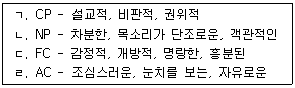
- ㄱ, ㄴ
- ㄱ, ㄷ
- ㄴ, ㄷ
- ㄱ, ㄷ, ㄹ
- ㄴ, ㄷ, ㄹ
(정답률: 34%)
114. 합리정서행동치료에 관한 설명으로 옳은 것은?
- ABCDE 모델에서 C는 신념체계이다.
- 역기능적인 자동적 사고의 수정을 강조한다.
- 주요기법으로 게임분석이 있다.
- 3R, 즉 책임, 현실, 옳고 그름을 강조한다.
- 삶에 대해 현실적이고 관대한 철학을 갖도록 돕는다.
(정답률: 12%)
115. 벡(Beck)이 제시한 인지적 왜곡(오류)의 형태를 올바르게 연결한 것은?
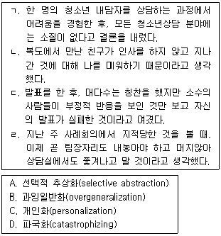
- ㄱ - A, ㄴ - B, ㄷ - C, ㄹ - D
- ㄱ - A, ㄴ - C, ㄷ - D, ㄹ - B
- ㄱ - B, ㄴ - C, ㄷ - A, ㄹ - D
- ㄱ - B, ㄴ - C, ㄷ - D, ㄹ - A
- ㄱ - D, ㄴ - C, ㄷ - A, ㄹ - B
(정답률: 63%)
116. 다음이 설명하고 있는 개인심리학의 기법은?
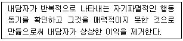
- 단추누르기
- 과제부여
- 수렁(악동) 피하기
- 마치 ∼인 것처럼 행동하기
- 수프에 침 뱉기
(정답률: 62%)
117. 상담초기에 상담자가 다루어야 할 내용으로 적절하지 않은 것은?
- 상담목표 달성 정도 평가
- 호소문제 유형
- 최근의 주요 기능 상태
- 문제 이해 및 평가
- 상담 구조화
(정답률: 67%)
118. 개인심리학에서 다루는 내용으로 올바르게 묶인 것은?
- 열등감, 억압된 성충동, 사회적 관심
- 사회적 관심, 출생순위, 우월성 추구
- 우월성 추구, 페르소나, 가상적 최종목표
- 생활양식, 전경과 배경, 출생순위
- 가상적 최종목표, 이면교류, 열등감
(정답률: 72%)
119. 직면에 관한 설명으로 옳지 않은 것은?
- 문제해결에 방해되는 불일치에 초점을 맞춘다.
- 때로는 유머를 사용해서 부드럽게 직면할 수 있다.
- 내담자가 정서적으로 감당할 수 있을 때 제공하는 것이 좋다.
- 내담자가 습관적으로 사용하는 방어기제도 직면의 대상이 될 수 있다.
- 정확성이 중요하므로 신뢰 관계가 형성되기 전에 사용하는 것이 좋다.
(정답률: 72%)
120. 여성주의치료에 관한 설명으로 옳은 것은?
- 내담자의 문제는 사적인 것으로 간주하여 사회 정치적 맥락을 배제하고 이해한다.
- 남녀의 행동차이를 사회화 과정보다는 선천적인 것으로 설명한다.
- 내담자의 개인적 변화를 돕는 것이 주된 역할이며, 사회 변화를 위한 직접적 개입은 상담자의 역할이 아니다.
- 사회적 성역할 기대는 정체성 형성에 커다란 영향을 미치는 것으로 간주한다.
- 치료의 핵심은 권력에 대한 관심이므로 상담자에게 절대적 권위를 부여한다.
(정답률: 58%)